4. Installing a NestJS server
Note: In the following, reference is sometimes made to a PHP server, the one referenced in the [Introduction au langage PHP7 par l'exemple] course. The NestJS server implements the same services as this PHP server.
We will discuss the HTTP functions of TypeScript—the functions that allow you to query a web server. For our tests, we need a web server. We will use the one developed in the “Case Study” section: the tax calculation server in NestJS. This server hosts a jSON service offering the following services:
- [init-session] — GET main.php?action=init-session&type=json — tells the server that we want jSON responses;
- [authentifier-utilisateur] — POST main.php?action=authenticate-user: The two posted parameters [user, password] determine whether or not the connection to the service jSON is authorized. By default, the credentials are [admin, admin];
- [calculer-impot] — POST main.php?action=calculate-tax: The posted parameters [marié, enfants, salaire] are used to calculate a tax:
- married: “yes” if married, “no” otherwise;
- children: number of the taxpayer’s children;
- salary: the taxpayer’s annual salary;
- [lister-simulations] — GET main.php?action=list-simulations — lists the simulations performed since the start of the session;
- [supprimer-simulation] — GET main.php?action=delete-simulation&number=x — deletes simulation No. x from the list of simulations;
- [get-admindata] — GET main.php?action=get-admindata — retrieves the entire database associated with the server into a jSON object;
- [fin-session] — GET main.php?action=fin-session: ends the session. To start a new one, the user must issue the “init-session” command described above;
We will now describe how to install this server. If you do not want to install this server, skip directly to the section “The HTTP Functions of TypeScript.” You will not be able to test the scripts in a live environment, but you will be able to examine the code.
4.1. Installing Laragon
As of September 2026, the Laragon tool is available at URL [Download Laragon – Fast & Modern Dev Environment ]. Laragon includes tools that allow you to install a PHP server and the SGBD and MySQL:

- in [1], an Apache web server;
- into [2], the SGBD and MySQL;
- to [3], a messaging tool that we will not be using;
- [4] starts all services (Apache, MySQL, MailPit);
- [5] displays the web page from URL and [http://localhost]. By default, this URL refers to the <laragon-install>\www folder, where <laragon-install> is the Laragon installation folder;
- in [6], launches the HeidiSQL tool, which allows you to manage MySQL databases. We will use this tool to create the database used by the tax calculation server;
- In [7], open a terminal; all the binaries needed for Laragon are located in PATH;
- In [8], open Windows Explorer to the folder associated with URL and [http://localhost];
The Laragon installation folder contains the following items:
 |
- In [1], the [bin] folder contains numerous applications:
 |
- In [1], the Apache web server;
- in [2], a command-line terminal;
- in [3], a [git] client that allows you to manage different versions of a project;
- in [4], a database manager;
- [5], an email manager;
- in [6], the SGBD and MySQL;
- [7], another web server;
- in [8], [node.js] to run JavaScript scripts;
- [9], a text editor;
- in [10], the interpreter PHP;
- in [11], the interpreter [Python];
- [12], a cache server;
Laragon comes with a comprehensive development environment. In this course, we will only use SGBD, MySQL, [6], and [heidisql] to manage it graphically;
4.2. Installation and Configuration of the NestJS Server
A NestJS server for a highly simplified tax calculation can be found in the nestjs-etude-de-cas folder within the script directory for this course:
nestjs-etude-de-cas/
├── package.json
├── nest-cli.json
├── .env.example
├── create_dbimpots.sql
├── src/
│ ├── main.ts
│ ├── main.controller.ts
│ ├── app.module.ts
│ ├── actions/
│ ├── config/
│ ├── entities/
│ ├── filters/
│ ├── model/
│ ├── responses/
│ ├── session/
│ └── utilities/
└── views/
If you have already installed the dependencies for the entire directory tree (using npm install at the root directory, via the npm workspaces described in the introduction to this document), the nestjs-case-study folder already contains its node\_modules. Otherwise, navigate to that folder and run:
The server needs a .env file to specify the connection settings for the MySQL database created by Laragon (see above) as well as the listening port. Copy the provided .env.example file to .env and then customize it:
PORT=3000
TAX_DATA_SOURCE=mysql
DB_HOST=localhost
DB_PORT=3306
DB_NAME=dbimpots-2019
DB_USER=admimpots
DB_PASSWORD=mdpimpots
CORS_ALLOWED=true
SESSION_SECRET=change-moi-en-production
- PORT: the listening port for the NestJS server (default is 3000).
- TAX_DATA_SOURCE: MySQL to use the database created below;
- DB_HOST, DB_PORT, DB_NAME, DB_USER, DB_PASSWORD: the connection parameters for the dbimpots-2019 database that we will create with HeidiSQL (see below)—same credentials as those defined in the create_dbimpots.sql script shown in the directory tree above;
- CORS_ALLOWED: allows calls to CORS from a TypeScript client running on a different port.
- SESSION_SECRET: the key used to sign the session cookie—change it if the server is ever to be made publicly accessible.
4.3. Creating the Database
To create the MySQL database required by the NestJS server, we use a Laragon option:
 |
- In [1], all services must be started;
- in [2], the [Database] option allows you to manage the database;
The [Database] option launches a utility called HeidiSQL:
 |
- In [1], you can select various SGBD options. The default value provided is SGBD MySQL. This is acceptable;
- in [2], you log in to HeidiSQL;
 |  |
- In [1-2], run the SQL file, then select the [create_dbimpots.sql] file, which you will find in the [nestjs-etude-de-cas] folder:
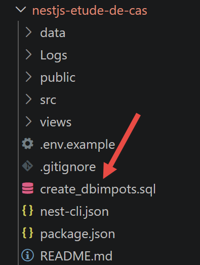
Running the [2] file will create the [dbimpots-2019] database used by the tax calculation server. To view it, run F5 within HeidiSQL to refresh the display:
 |
The database [dbimpots-2019] has been created.
4.4. Starting the NestJS server
Once the .env file is in place (and the database has been created), open a terminal at the root of the [nestjs-etude-de-cas] folder, then compile and start the server:
For development, with automatic restart after every source code change, use:
In both cases, the console displays:
[Nest] ... [NestFactory] Starting Nest application...
[Nest] ... [InstanceLoader] AppModule dependencies initialized
[Nest] ... [RoutesResolver] MainController {/}:
[Nest] ... [RouterExplorer] Mapped {/main.php, ALL} route
[Nest] ... [NestApplication] Nest application successfully started
Serveur de calcul de l’impôt (NestJS) démarré sur http://localhost:3000
Point d’entrée jSON : http://localhost:3000/main.php?action=init-session&type=json
Point d’entrée HTML : http://localhost:3000/main.php?action=init-session&type=html
The NestJS server has a single entry point (main.php, retained for compatibility even though it is NestJS here) that receives all requests, and an “action” request parameter that selects the processing to be performed:
4.5. HTML tests for the tax calculation server
If you haven’t already done so, start all Laragon services (for MySQL) as well as the NestJS server (npm run start:prod or npm run start:dev; see above). Then, in a browser, request the URL at http://localhost:3000/main.php?action=init-session&type=html — this is the same init-session action as for the PHP server, with the same type=html parameter, but on port 3000:
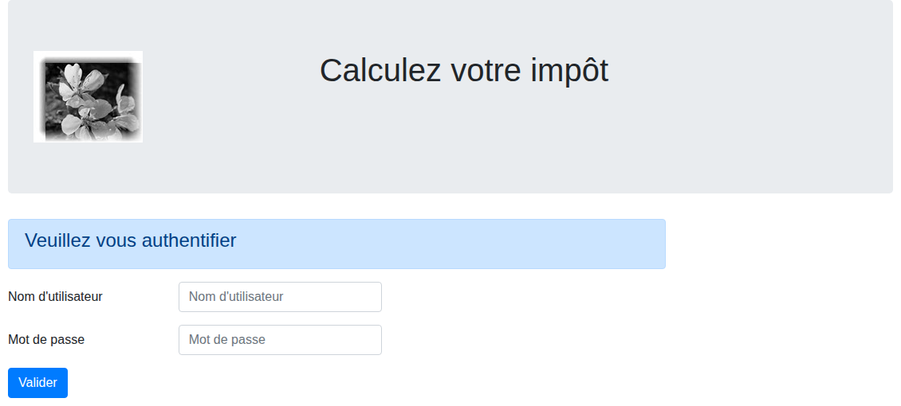 |
The credentials are admin/admin, exactly the same as for the PHP server—they are defined in the same way, in the server code rather than in config.json. Enter them:
 |
Fill out the form and then submit it. You’ll see the following page:
 |
The tax calculation result is displayed—this page is indeed using the database we just created. The “List of Simulations” link in the left-hand menu displays the history of calculations for this session:
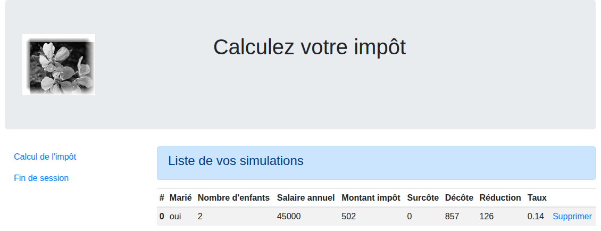 |
If you get these results, the NestJS tax calculation server is working correctly with its MySQL database. We are now ready to query the server with TypeScript clients. To do this, we will use version jSON of the server.
4.6. The API and jSON versions of the tax calculation server
4.6.1. Postman Tests
The PHP server was tested using the Postman desktop tool. The same collection of requests (impots-servers-tests.postman_collection.json, provided in the netjs-cours folder) works identically against the NestJS server: API and jSON are exactly the same—same actions, same parameters, same status codes. In Postman, simply change the port for each request (80 → 3000), or more simply, the base URL in the collection if you’ve defined it as a variable.
The Postman tool is available at URL [https://www.postman.com/downloads/]. You may need to create an account.
Start all Laragon services, then open the Postman desktop app:
 |  |
- In [1-2], create a request HTTP to query the tax calculation server;
 |
- In [1], you can name your query HTTP. You will be able to save it and retrieve it;
- In [2]: enter the URL of the server you want to query;
- in [3]: Select the query type HTTP. We will use two of them in the following: GET and POST;
- in [4]: if your query has parameters of the type [?param1=val1¶m2=val2&…], you can define them here;
- in [5]: if the query type is POST, this is where you define the posted values;
In [nestjs-cours], you will find a collection of HTTP requests to the tax calculation server that you can import into POSTMAN.

Proceed as follows. In Postman, run [Ctrl-O]:
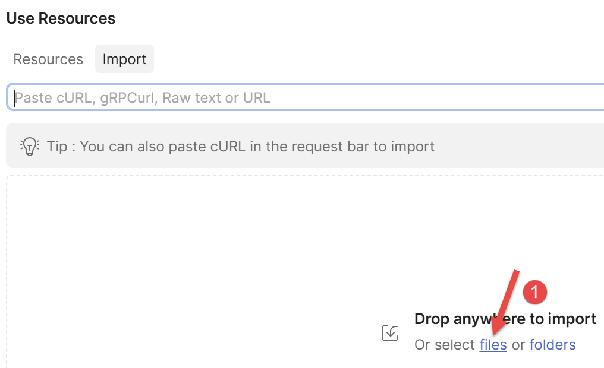 |
- Use the link [1] to import the file [impots-servers-tests.postman_collection.json] from the folder [netjs-cours]:
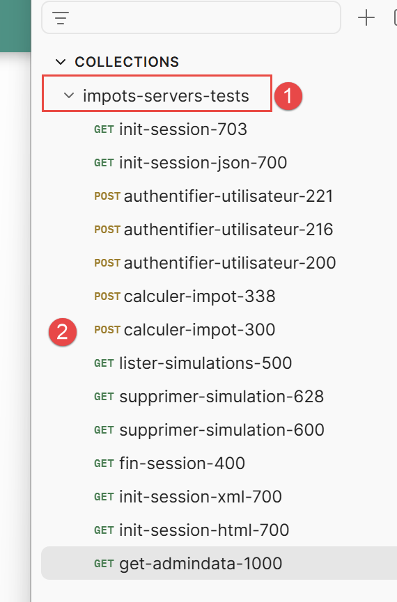 |
- In [1], the name of the imported collection;
- in [2], its contents. This is a list of requests (HTTP) to the tax calculation server (jSON);
Let’s look, for example, at the request named [init-session-json-700]. It initiates a session jSON with the server:
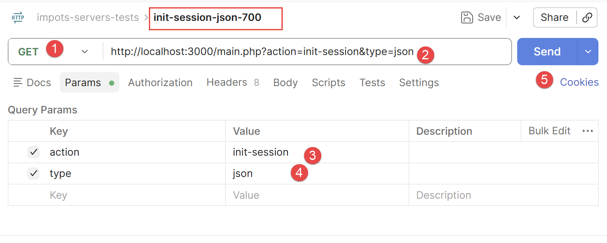 |
- In [1], the request HTTP is a GET;
- in [2], the queried URL. It requests to initiate a jSON dialogue with the server;
- in [3-4], we find the parameters from GET;
- in [5], to send the request to the tax calculation server;
Before sending the request, make sure you have started the Laragon services. The server’s response jSON is as follows:
 |
Now use the request named [init-session-703]:

The request [1-3] is invalid. The parameters must be of the type [?action=xx&type=yy], where “type” can be “html,” “xml,” or “json.” The type “x” will not be recognized. The server’s response, jSON, is as follows:
 |
Resend the request [init-session-json-700] to restart a jSON session. Then send the request [authentifier-utilisateur-200] to authenticate yourself:
 |
- In [1], the request is POST;
- in [2], the authentication request URL;
- in [3], the body of POST, which contains the posted values;
- [4-5], the two posted values. These are the application administrator’s credentials. They are defined in the server’s [config.service.ts] file;
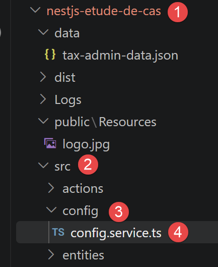
The server’s response, jSON, is as follows:
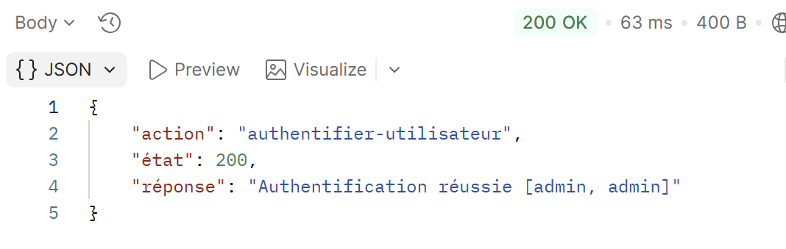 |
Once you are authenticated, you can perform a tax calculation. To do so, use the query [calculer-impot-300]:
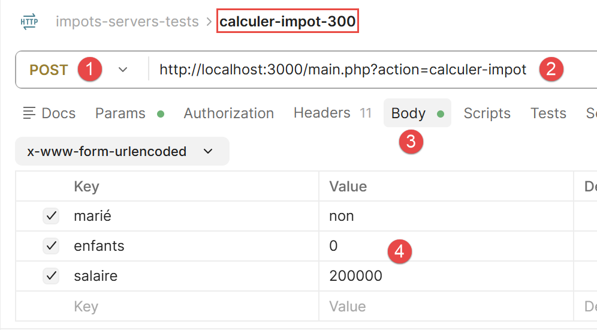 |
- In [1], this is a POST request;
- in [2], the URL request is called;
- in [3-4], the three values are posted;
The response jSON is as follows:
 |
Run the request several times, changing the posted values each time. Once you’ve done that, run the request [lister-simulations], which will display the list of simulations you’ve performed:
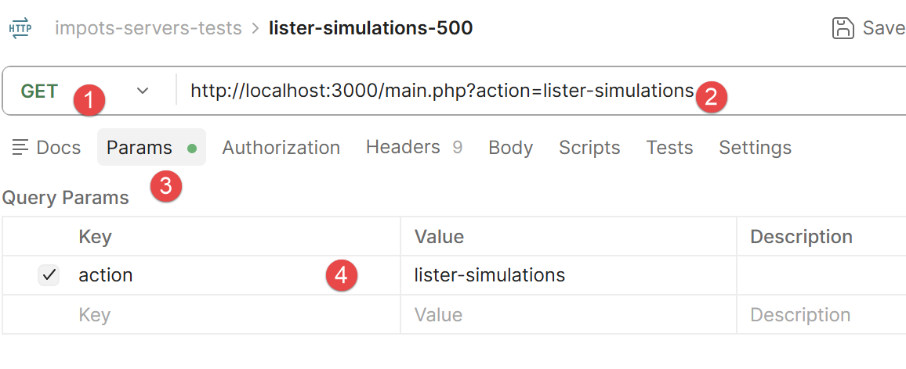 |
- The request GET [1-4] has only one parameter: [action]. The response jSON is as follows:
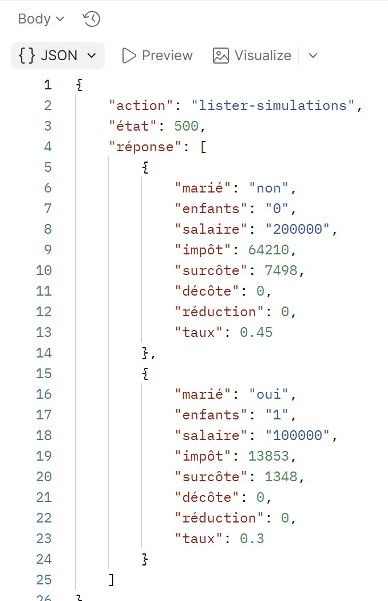 |
This is the list of simulations you have performed.
Use the query [supprimer-simulation-600] to delete a simulation:
 |
- In [2], URL is queried with a GET. It includes two [action, numéro] parameters. [numéro] is the number of the simulation you want to delete from the list of simulations. Here, the number 0 refers to the first simulation in the list;
The server’s response, jSON, is as follows:
 |
The response jSON is the remaining list of simulations after deleting one of them;
Finally, you can end the session with the request [fin-session-400]:
 |
The query URL [1-2] has only the parameter [action] (3). The response jSON is as follows:
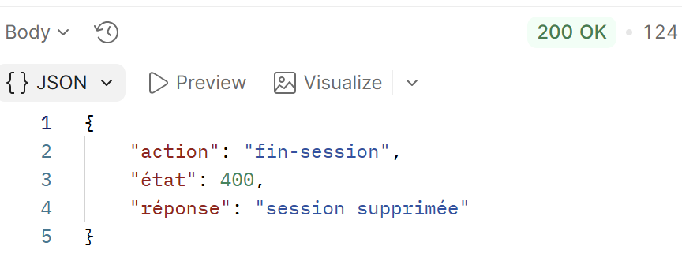 |
4.6.2. curl Tests
We can also use the [curl] tool to test the server’s jSON services. All of the following requests use the same session, HTTP (the -b/-c cookies.txt option in curl preserves the session cookie between calls, just as a browser or Postman would):
Let's start a jSON session with the [init-session] action:
Status code 700 confirms that the session has started—this is the same code returned by the server PHP. Now let’s authenticate using the [authentifier-utilisateur] action—a POST request, with a single parameter in the URL (action) and the posted credentials:
curl -b cookies.txt -c cookies.txt -X POST "http://localhost:3000/main.php?action=authentifier-utilisateur" \
-d "user=admin&password=admin"
{
"action": "authentifier-utilisateur",
"état": 200,
"réponse": "Authentification réussie [admin, admin]"
}
You can now calculate taxes using transaction [calculer-impot], or continue using POST with the three posted parameters: marital status, children, and salary:
curl -b cookies.txt -c cookies.txt -X POST "http://localhost:3000/main.php?action=calculer-impot" \
-d "marié=oui&enfants=2&salaire=45000"
{
"action": "calculer-impot",
"état": 300,
"réponse": {
"marié": "oui",
"enfants": 2,
"salaire": 45000,
"impôt": 502,
"surcôte": 0,
"décôte": 857,
"réduction": 126,
"taux": 0.14
}
}
The values are exactly the same (€502 in tax, a discount of €857, a reduction of 126 €, and a rate of 14%) as those displayed in the browser in the previous section—the two versions, HTML and jSON, share the same calculation engine. The list of simulations is obtained using the action [lister-simulations], a simple GET:
{
"action": "lister-simulations",
"état": 500,
"réponse": [
{
"marié": "oui", "enfants": 2, "salaire": 45000,
"impôt": 502, "surcôte": 0, "décôte": 857, "réduction": 126, "taux": 0.14
}
]
}
Run the query [calculer-impot] several times by changing the posted values, then use [supprimer-simulation] to remove a simulation from the list (&number=x refers to its sequence number), and [get-admindata] to retrieve the entire database in the format jSON (tax brackets and calculation constants). Finally, end the session with the action [fin-session]:
You now have a good understanding of the API jSON exposed by the NestJS tax calculation server—which is exactly the same as that of the PHP server. We can now move on to writing TypeScript scripts that query this server.